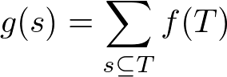
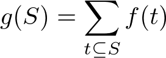

高速ゼータ変換(FZT)
コードについての説明
ゼータ変換は以下の 2 種類のことを指して呼ばれる.
(1) $s$ を含むような上位集合 $T$ についての $f(T)$ の総和

(2) $S$ に含まれる下位集合 $t$ についての $f(t)$ の総和

このとき $g$ は $f$ のゼータ変換でありこのような $g$ は計算量 $\O (n2^n)$ で求めることができ, 実装自体は以下のようにシンプルにかける(in-place で実装した).
(以下コードについて)
(1) については $i$ 周目の $f[j]$ は $j$ の下位 $i$ 桁以外一致しているような数 $k$ で $j$ を含むもの($j \subseteq k$) について和を取っている.
$j$ の $i$ 桁目が $0$ のものについては $i$ 周目に更新する必要があるがそれは前の周までの $f[j | (1 << i)]$ を足してやると良い.
(2) については $i$ 周目の $f[j]$ は $j$ の下位 $i$ 桁以外一致しているような数 $k$ で j に含まれるもの($k \subseteq j$) について和を取っている.
$j$ の $i$ 桁目が $1$ のものについては $i$ 周目に更新する必要があるがそれは前の周までの $f[j ^ (1 << i)]$ を足してやると良い.
時間計算量: $\O (n 2^n)$
コード
// 上位集合(含む集合)の和
void fast_zeta_transform(int n, vector<int>& f)
{
for(int i = 0; i < n; ++i){
for(int j = 0; j < (1 << n); ++j){
if(!(j & (1 << i))) f[j] += f[j | (1 << i)];
}
}
}
// 下位集合(含まれる集合)の和
void fast_zeta_transform(int n, vector<int>& f)
{
for(int i = 0; i < n; ++i){
for(int j = 0; j < (1 << n); ++j){
if(j & (1 << i)) f[j] += f[j ^ (1 << i)];
}
}
}
verify 用の問題
verify していません(verify 問題を知らない)